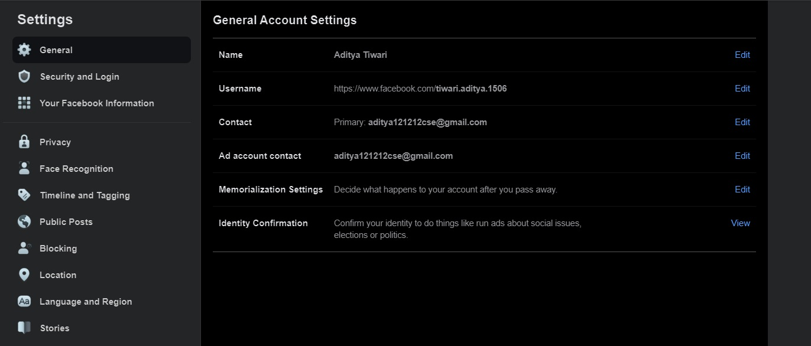

Șase pași pe care să-i urmezi pentru ca Facebook să-ți
șteargă automat contul după ce mori
Contul de Facebook al unei persoane care a decedat
poate fi păstrat după expedierea unei cereri depusă de o persoană verificată.
Cu toate acestea, Facebook îți oferă de asemenea o opțiune de a șterge automat
contul Facebook după ce va fi notificat despre decesul tău, scrie playtech.ro.
Cum să-ți ștergi automat contul de Facebook după moarte
Acum, dacă nu vrei să-ți păstrezi contul Facebook după moarte,
acesta se poate șterge automat. Iată pașii pentru a face acest lucru:
Conectează-te la contul tău de Facebook;
Dă clic pe săgeată de jos din colțul din dreapta sus;
Dă clic pe Settings & Privacy din meniu. Apoi, dă click pe Settings;
Dă clic pe General în partea stângă;
Dă clic pe Memorialization Settings;
Dă clic pe Request that your account be deleted after you pass away;
Dă clic pe Delete After Death.
Acum, dacă nu vrei să-ți păstrezi contul Facebook după moarte, acesta se poate șterge automat. Iată pașii pentru a face acest lucru: Conectează-te la contul tău de Facebook; Dă clic pe săgeată de jos din colțul din dreapta sus; Dă clic pe Settings & Privacy din meniu. Apoi, dă click pe Settings; Dă clic pe General în partea stângă; Dă clic pe Memorialization Settings; Dă clic pe Request that your account be deleted after you pass away; Dă clic pe Delete After Death.

Gata. Facebook îți va șterge contul, inclusiv toate datele prezente în acesta,după ce cineva va anunța despre moartea ta. Acum, trebuie doar să te gândești cui îi lași această responsabilitate imensă.